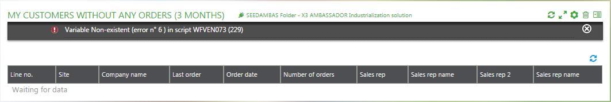

Supervisor Administration Requester
| Full version 7 function | Application/Contract | Sage X3/ERP | Class | QUERY('code') | Representation | QUERY~code~n |
|---|
The Sage X3 Supervisor includes three different tools to build requests:
- GESALH which is managed through a grid of parameters.
- GESALT which has a graphical interface.
- GESALQ which allows you to enter requests directly in SQL language.
The requests created by GESALH can be executed in the client. This document explains how to use this function.
1. Introduction
When a request is created by GESALH, the results are stored in a dedicated folder of the application server as JSON format text files. These files are indexed in a way that allows direct access to a given line, and sequential access to the next lines.
The requester can compute and display the results of a request at the correct level of data aggregation:
- "1" is the most aggregated level. At this level, one line is displayed for each value of the first field where Group equals "Yes", and the accumulated values provide the total for all the lines. Only the fields whose level equals "1" are displayed on the page.
- At level "2", one line is displayed for each different set of values of the first two fields where Group equals "Yes". Only the fields whose level equals "1" or "2" are displayed on the page.
- If there are N fields where Group equals "Yes", level "N+1" provides the details of the request, and all fields are displayed on the page.
Links "+Lev" and "-Lev" allow you to navigate from one level to another.
There are two display modes for the request:
- If parameter cube is set to "true", zooming on the next level of a line only displays the details of the aggregated lines of the current line. This is the default mode.
- If parameter cube is set to "false", zooming on the next level of a line displays all the lines of the current level, starting from the first aggregated line.
A graphical representation of the current page can be displayed for both modes.
Note: You can also enter "99" to display the latest level but this is not recommended as it might not work properly with the Office client. Try to use the correct initial level instead, from 1 to N, where N is the number of breaks performed.
2. Creating a request
After having created a request using the GESALH function and once the request is validated, the Supervisor creates:
- A screen, a window, and a program to make sure the tool can be executed with an intermediate database storage.
- A Sage X3 script file that can be called through a class and a representation with the new client. The script executes the request much faster. More information about it can be found in the following sections.
3. Accessing the request page
Exemple: To access the "MYREQUEST" request page, you have to create a menu item with the following parameters:
- Link type: "Representation".
- Associated class: "QUERY('MYREQUEST')".
- Representation: "QUERY\~MYREQUEST\~l". This refers to the representation used when the level of details is "1".
- Facet: "query".
This link gives access to the request, including a graphical representation of the lines. If the level is not given in the representation, only the grid mode is displayed. In this example, the representation would be "QUERY~MYREQUEST".
Additional parameters can be sent using the URL with the ¶meter=value syntax.
Once this is done, clicking the link associated with the menu item gives access to the request display and the execution function.
4. Entering a request page
When entering the request page, the Supervisor first determines if the request has to be recomputed. This can happen if at least one of the following conditions is met:
- The request has never been executed.
- The request has the "recalculated" flag set to "yes".
- The last execution was done with another set of range parameters.
- Parameter value
&forcedExecution=trueis found in the URL.
If the request has to be recomputed, the Supervisor evaluates the cost of the computation. If this cost is small, the request is computed and the result is displayed on the fly. If this is not the case, the following message is displayed:
This request is too heavy to run directly and has been submitted in batch (xxxx-xxxxxxxx-xxxx-xxxx-xxxx-xxxxxxxxxxxx)
Once the batch execution has been performed, calling the page will display the results.
String xxxx-xxxxxxxx-xxxx-xxxx-xxxx-xxxxxxxxxxxx is a UUID that was assigned to the execution request and that can be used as an additional parameter to display the results of the computation.
The computation cost is evaluated as follows:
- The system takes into account the table with the lowest detail in the request. If, for example, a request displays information coming from a header table and lines, the line table is considered.
- If the table contains more than N lines, the system considers that the computation will take too much time to be done on the fly. The value of the "N" threshold is determined by global parameter SELWARN, which is already used to disable user memos on unindexed selections. If no value is found, "10,000" is considered the limit.
5. Displaying a request
If the request was executed on the fly or if results were found, the page directly displays the results of the request in the following format:
- The Informations header line displays a message.
- A second header line displays the level.
- A graphical representation of the request.
- A grid with columns that displays the computed lines.
- A paging system with links on page numbers, as well as Previous Page and Next Page links.
Caution: Try to avoid requesting more than 1,000 lines at once.
The Next Page and Previous Page links are implemented with URLs:
- where
key_valuesis greater than the last value of the page - where
key_valuesis lower than the first value of the page
Caution: The next or previous pages can miss lines if the sort indexes have no unique values, or if all the components that make the line unique are not displayed in the page. To have the right pagination, make sure you add an additional criterion that makes the line unique at the end of your sorting criteria.
The first line of the Information header has the following format:
Query QUERY_NAME computed the YYYY-MM-DD HH:MM:SS in TIME (T1+T2) seconds on NB_LINES lines
Where:
- QUERY_NAME is the name of the query displayed.
- TIME gives the total period of time spent computing the request. "T1" is the time spent by the database to compute the request, and "T2" is the time spent by the Supervisor layer to fetch the data and format it.
- NB_LINES is the current number of lines for the current level of aggregation.
The second line of the Information header has the following format:
CURRENT_LEVEL / MAX_LEVEL >> KEY1 > KEY2 ...
Where:
- CURRENT_LEVEL is the current level of aggregation in the range "1 to MAX_LEVEL".
- MAX_LEVEL is the maximum level of aggregation. It is equal to the number of fields in the request definition where Group equals "Yes", + 1.
- KEY1, KEY2, and so forth, are the values of the aggregation keys that are fixed. The number of keys is equal to the current level minus one.
Each request line whose data references another entity is associated with a hyperlink. For example, if there is any item reference on the line, a hyperlink to the details of this item is available.
Two possible links can be displayed:
- +Lev which displays the request at the next level of aggregation, starting from the current line. The current line detail is displayed in cube mode. Otherwise, the request is not limited to the details associated with the current line. This link is only available if the last level was not reached.
- -Lev returns to the previous level of aggregation. This link is only available if the current level is not the first one.
The following example shows the results of a request for a total of quantity, and a total value per date, item, and customer:
At level 1
Date Quantity Amount 2013/02/01 100 3000,00 2013/02/02 100 5000,00 -- LINE on which Lev+ is clicked 2013/02/03 180 7000,00 ...
At level 2
Once you click the second line, the list starts with the details of date 2013/02/02. It displays four lines that split the quantity of 100 and the amount of 5000 on four items. The next lines are the decomposition of the level 1 third line and so on:
Date Item Quantity Amount 2013/02/02 CD100 25 1500,00 + These 4 LINES 2013/02/02 CD200 30 2500,00 | are the decomposition 2013/02/02 CD300 5 300,00 | of the previous 2013/02/02 HT100 40 700,00 + line 2013/02/03 CD300 30 1000,00 2013/02/03 RD678 100 4000,00 2013/02/03 ZE789 50 3000,00 ...
In cube mode, only these four lines are displayed. However, if cube mode is disabled, the next lines are also displayed.
At level 3
After clicking the fourth line, the decomposition of the quantity of 40 and the amount of 700 for item HT100 is displayed on three lines for three customers. The next lines, which will appear only if cube mode is disabled, pertain to another date and another item.
Date Item Customer Quantity Amount 2013/02/02 HT100 ABC10 25 300,00 2013/02/02 HT100 AGF03 10 280,00 2013/02/02 HT100 ERD76 5 120,00 2013/02/03 CD300 ABC00 20 700,00 2013/02/03 CD300 RTG67 10 300,00 2013/02/03 RD678 AAB89 80 3000,00 2013/02/03 RD768 ERZ90 20 1000,00 ...
6. Additional parameters
The URL of the page can accept other parameters. The default URL generated from the setup of the menu item is structured as follows:
(server_URL)/html/main.html?url=/sdata/x3/$$prod/FOLDER/QUERY('REQ_NAM')?representation=QUERY~REQ_NAM~1.$query
Where:
- REQ_NAM is the name of the request.
- FOLDER is the Sage X3 folder in which the request is executed.
Additional parameters can be added at the end of the URL with the following syntax: ¶meter_name=value
Example:
...QUERY('REQ_NAM')?representation=QUERY~REQ_NAM~1.$query&count=200&startRecord=1200
When the query is defined from a menu item, these parameters are entered in the Parameters section of the menu item record.
The list of parameters available is provided below:
| Parameter name | Possible values | Default value | Use | Example | cube | true, false | true | The cube mode handles the display of the lines. If set to true, it enables the cube mode: only the lines contained in the current level line are displayed. If set to false, it disables the cube mode: all lines are displayed. See the example above for more details. | &cube=false
|
|---|---|---|---|---|
| forcedExecution | true, false | false | If set to true, it forces the re-execution of the request, even if a relevant result has already been computed. | &forcedExecution=true
|
| frequency | 1 to 9 | 6 | Defines that a shared or personal request must be re-executed if it has not been recomputed since the revalidation of the request, or since the computation time delay elapsed according to the following values:
|
&frequency=8
|
| level | 1 to N | 1 | Current level of grouping for the data. This parameter usually has the same value as the last segment in the representation value. The segment in the representation value is used to determine the columns that must be displayed at the current level, whereas the parameter defines the level of aggregation used for the displayed data. | &level=3
|
| linesLimit | numeric value | 0 (no limit) | This parameter is used to limit the number of computed lines. It is only useful if the request is executed and if the user wants to test a sample of data for the corresponding request. If the result is truncated because the maximum number of lines is reached, the information message will mention it: "Line number limit exceeded (NNNN)." | &linesLimit=5000
|
| timeLimit | numeric value | 0 (no limit) | This parameter is used to limit the time spent for computation. It is only useful if the request is executed and if the user wants to test a sample of data for the corresponding request. If the result is truncated because the maximum time is reached, the information message will mention it: "Execution time limit exceeded (NNNN)" Caution: Make sure it does not limit the time spent by the database to compute the request, but only the cumulated time, including the fetch time. When the time is limited to 100 seconds:
|
&timeLimit=20
|
| startRecord | numeric value | 1 | This parameter defines the first line number displayed (used for paging). | &startRecord=3000
|
| startIndex | numeric value | 1 | This parameter is generated by the paging links and is not used directly. In cube mode, the system uses the "startRecord" value to know the current group of aggregated lines. Parameter "startIndex" relates to a relative page in this group. | |
| requestID | UUID in canonical format | null UUID | This parameter defines the UUID assigned to the request during computation. If the UUID is not null and it is not the right one, the request is recomputed. This is used in the paging and zooming links to make sure the request was not recomputed. If the UUID is not the right one, the following error message is displayed: "The request was recomputed". | &requestID='7ca26fea-0735-4bd1-b49d-2f3dff3a4d68'
|
| displayLineNum | true, false | false | If set to true, this parameter adds a column at the beginning of the grid to display the line number in the level. | &displayLineNum=true
|
| recordPerPage | numeric value usually from 10 to 1500 | user parameter "NBRREQ" value for query (20 if no value found), and user parameter "NBRREQBLK" in bulk mode (200 if no value found) | This parameter defines the number of lines displayed in a page. The query facet is used for a browser page, but the bulk protocol is used for the Excel client. It fetches 200 lines by default. | &recordPerPage=250
|
| count | This parameter name can be used in place of the previous one. If both are defined, the "recordPerPage" value is used. | &count=130
|
||
| portview | Allows to get the value of some parameters (initial level, computation frequency) from a dashboard view identified by its code. | &portview=MYVIEW
|
||
| where | Condition in SData format | none | This condition allows the user to add filtering conditions based on the parameters that are defined in the request definition with Range equals "true". Only simple conditions using "le", "ge", "eq", "lt", "gt" or "between ... and ..." operators can be used. If several conditions are given, they must be associated with "and". When the condition changes, the request is recomputed. Important: Only string constants (between single quotes) or numeric constant can be given. No variables nor computed expressions are allowed. | &where=(ITEM gt 'ABC') and (QTY between 100 and 200)
|
| first_XXX last_XXX |
range value for XXX field | none | XXX must be one of the parameters of the query for which a range has been set. This is another way to create a range for a parameter, but this parameter only applies if there are no &where clauses. |
Using &first_ITEM=ABC&last_ITEM=DEF is similar to &where=(ITEM between 'ABC' and 'DEF'). |
7. Batch computation
When the request execution is too heavy to be performed immediately, the Supervisor creates a batch execution request. An entry is created in the batch request table with the following information:
- The execution time is set to the current date and hour.
- The name of the task is "SYRAREP".
- The parameter that are sent when the execution was requested.
When the batch scheduler is on, the task is executed if the maximum number of tasks currently running does not exceed the limit. This means that the user usually triggers the execution within seconds. If the batch scheduler is on every minute, it takes an average of 30 seconds.
8. Office Links
When the Excel link or the Mailmerge link are used, the requester switches to bulk mode by using the $bulk facet. In this mode, the number of lines is no longer limited to 1,000.
For example, if you want to get the complete details of a request in an Excel spreadsheet with less than a million lines, you can use &cube=false&count=1000000 from the Excel plugin.
9. Current limits
The current limits are as follows:
- The SQL requester is not available in this mode.
- It is not possible to call the function that executes the request without giving a request code.
- No direct entry of parameters is possible at the moment. The "portview" option allows you to compute them.
10. Using queries with graphs
When a query uses graphs, the following recommendations have to be followed:
- The query must have at least one breaking value (more than one level).
- The level must not be set to the last level if the user wants to see the breaking level as a title of the X series on the graph. On the last level, the series label is always the line number (which is not relevant in most cases).
- The cube mode must be enabled.
11. Technical appendix
The requester generates a script called "WFname", where name is the name of the query. This script includes several subprograms called by the Supervisor layer. The main ones are:
- "Subprog EXEC_RQT" which executes the query.
- "Subprog GET_RQT" which reads the result.
- "Subprog PROTO_JSON" which returns the prototype describing the data returned.
This script is generated in a way that makes it easy to read (with comments). It does not have to be modified because it will be completely regenerated each time the query is validated. However, it might be interesting to have a look at it, especially if errors happen during execution.
This can happen if:
- A query that mentions a column that no longer exists in the table was run.
- A computation formula uses a variable that does not exist.
- A computation error (division by 0, for example) occurred during the execution.
In this case, the error, the script, and the corresponding line are mentioned. Below is an example of an error found during the execution:

Script WFVEN073 looks like this:
# Sage X3 supervisor
# Request VEN073 (Customers without any orders) 2015-09-09T07:46:06
...
# Open the tables
Local File VIDLECUST [VIC]
Local File ALISTEH [ALH]
Local File AFCTFCY [Z_AFY]
# Default files
Default File "[VIC]"
# Open the data file and fill them with the right header
Gosub HEADRQT
# Create a .lock file with UUID
Openo filpath('RQT',REQUID,'lck') Using [LCK] : Openo Using [LCK]
# Assign the additional criteria
CRITSUP(1)="([F:VIC]AUSNUM = GACTX.USER |[F:VIC]AUSNUM2= GACTX.USER)"
# Entry point
Local Char RQT_CODE(20)
RQT_CODE='VEN073'
Gosub EXERQT From SUBALH11
# Now let's declare the request (Link) and the fields expected (Columns)
Link [VIC] With
& [Z_AFY]AFF0 ~='';GACTX.APRFCOD; 'GESSOH'
& As [LNK]
& Where evalue(CRITERE)
& & evalue(CRITSUP)
& Order by Key CLE = [F:VIC]ORDDAT
Columns [LNK] ([F:VIC]BPCNUM,[F:VIC]BPCNAM,[F:VIC]SOHNUM,[F:VIC]ORDDAT,
& [F:VIC]CNTSOH,[F:VIC]REP1,[F:VIC]REPNAM,[F:VIC]REP2,[F:VIC]REPNAM2,
& [F:VIC]SOPLIN,[F:VIC]SOQSEQ)